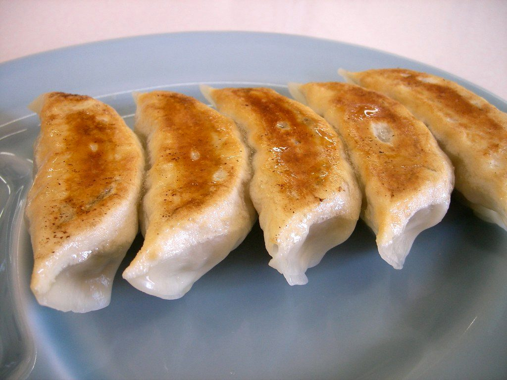
Gyozas 餃子
6,90 €
Seis empanadillas de cerdo celta, col y jengibre, doradas a la plancha. Con salsa ponzu.
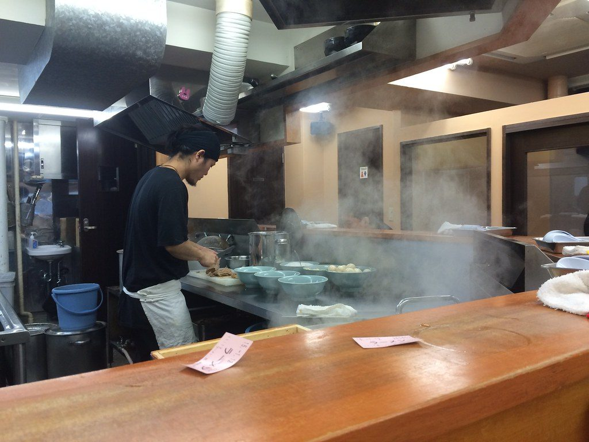
Un solo plato hecho de seis maneras, tres aperitivos para abrir boca y dos postres para cerrar.

6,90 €
Seis empanadillas de cerdo celta, col y jengibre, doradas a la plancha. Con salsa ponzu.
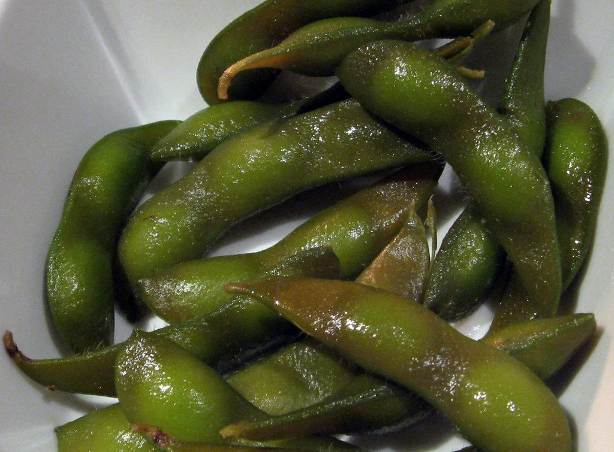
4,50 €
Vainas de soja verde al vapor con sal en escamas y un toque de lima.
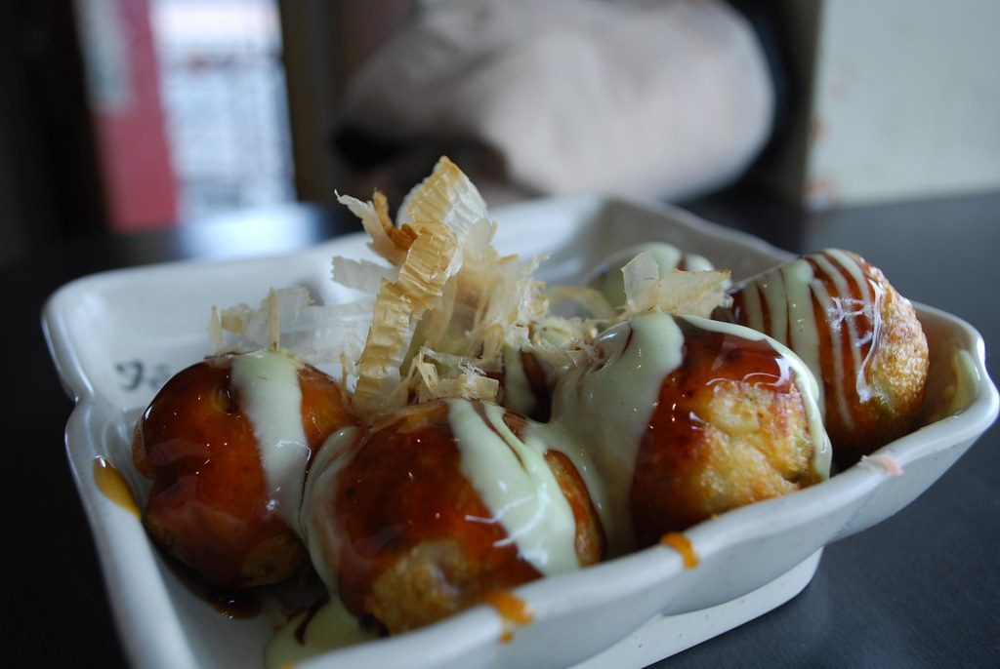
7,50 €
Seis buñuelos de pulpo de la ría con salsa takoyaki, mayonesa japonesa y katsuobushi.
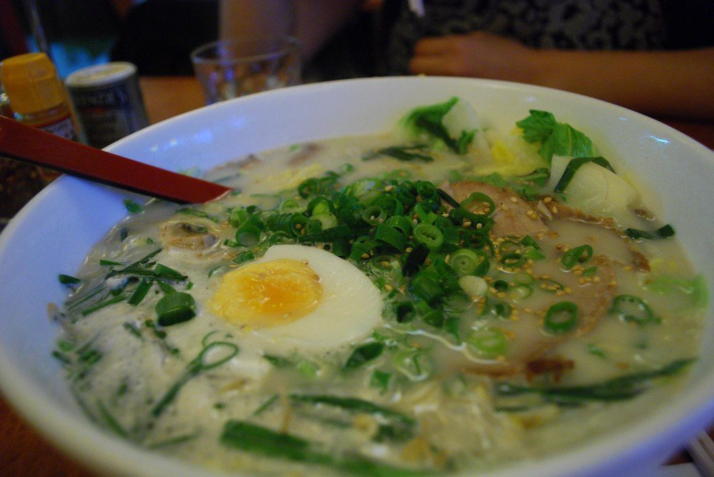
Recomendado del chef14,50 €
Caldo blanco de hueso de cerdo cocido 18 horas, chashu glaseado, huevo ajitama, setas kikurage, cebolleta y nori.
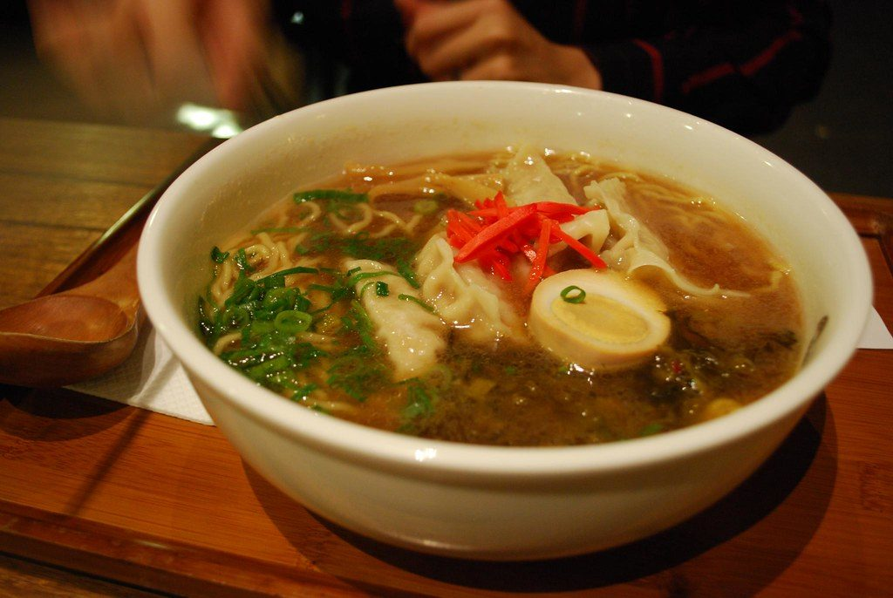
13,50 €
Caldo claro de pollo y dashi con tare de soja, chashu, brotes de bambú (menma), naruto y huevo ajitama.
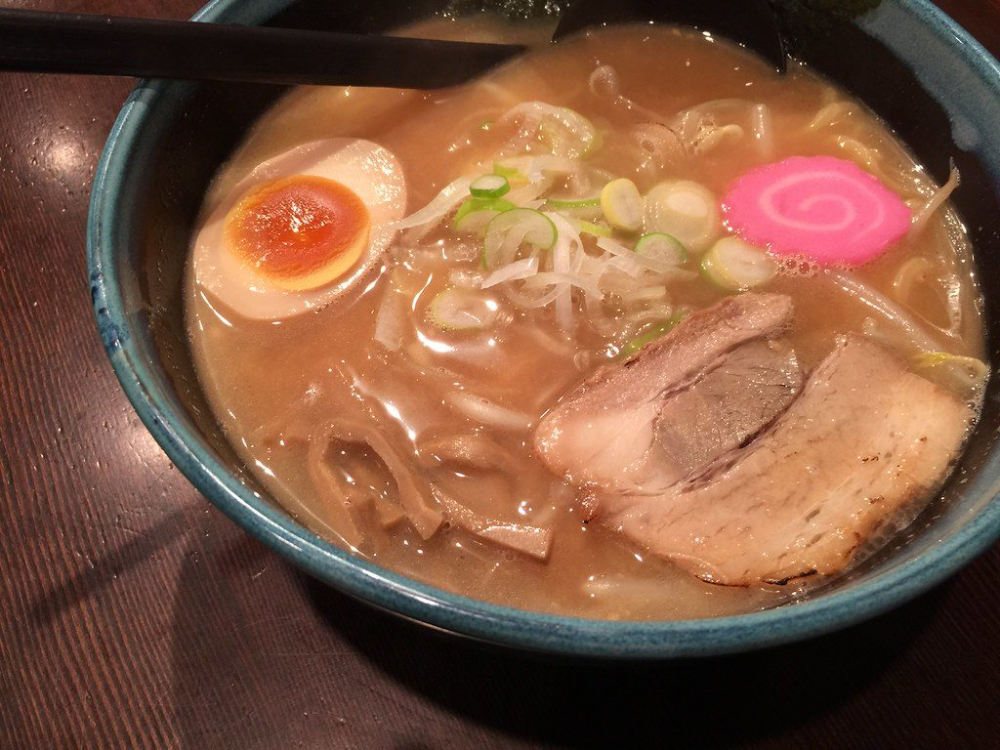
Picante suave, nivel 1 de 3
14,00 €
Caldo de miso rojo al estilo de Sapporo, el de la familia: maíz, brotes de soja salteados, chashu y una nuez de mantequilla.
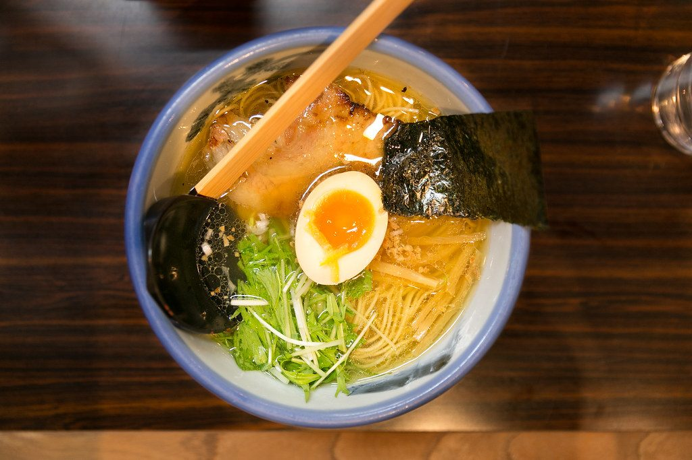
13,90 €
El más ligero: caldo de pollo y kombu con sal marina y cáscara de yuzu, pollo a baja temperatura, huevo y mizuna.
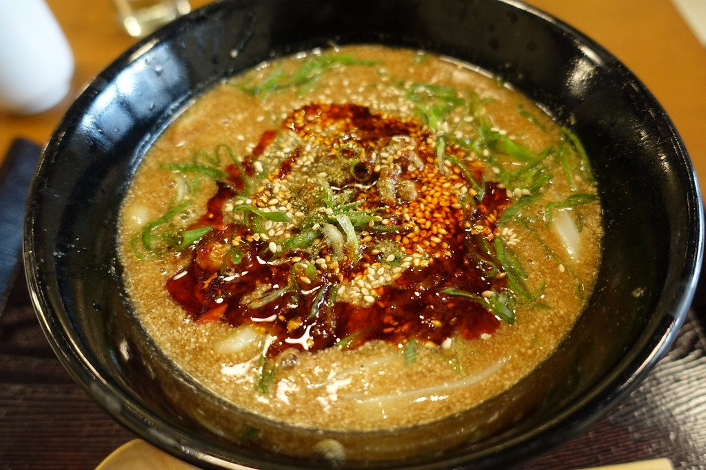
Muy picante, nivel 3 de 3
14,90 €
Caldo cremoso de pasta de sésamo y chile, carne de cerdo picada con miso picante, bok choy y cacahuete tostado.
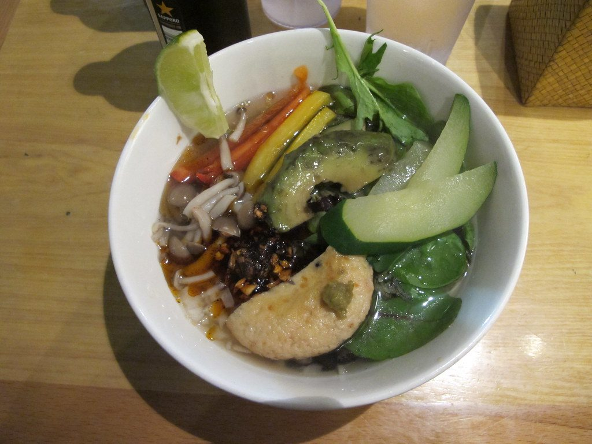
Picante suave, nivel 1 de 3
13,50 €
Caldo de verduras asadas, shiitake y kombu, tofu marinado y verduras de temporada de la Plaza de Abastos.
いただきます Cómo se come
En Japón el ramen se come rápido y caliente. Remueve el fideo con los palillos para que coja el caldo, sórbelo sin miedo (enfría y potencia el sabor) y usa la cuchara para el final.
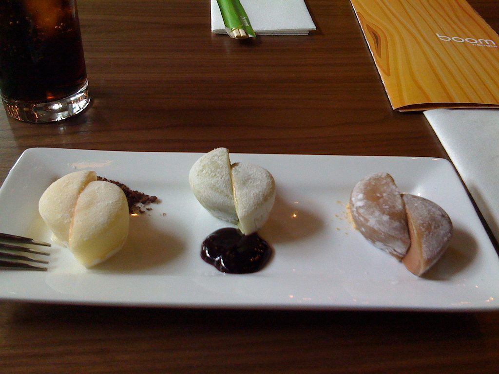
5,50 €
Tres bocados de pasta de arroz rellenos de helado: matcha, sésamo negro y fresa.
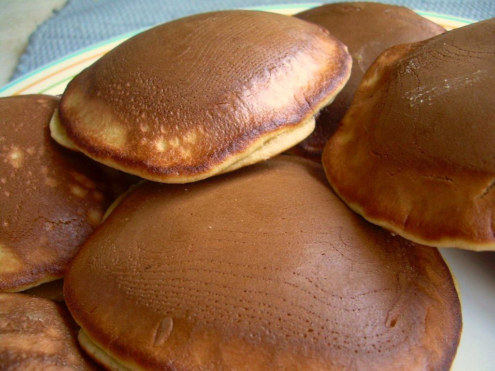
4,90 €
Dos tortitas esponjosas de miel rellenas de anko, crema dulce de judía roja. Recién hechas.
No hay platos con ese filtro.
表示 Leyenda
Usamos los iconos habituales de los 14 alérgenos que el Reglamento (UE) 1169/2011 obliga a declarar. Pasa el ratón o toca cada icono de un plato para ver su nombre.
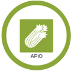
ApioDínoslo al reservar o al llegar a la barra. Tenemos la información completa de los 14 alérgenos de cada plato a tu disposición. Precios con IVA incluido.
Reservar mesa